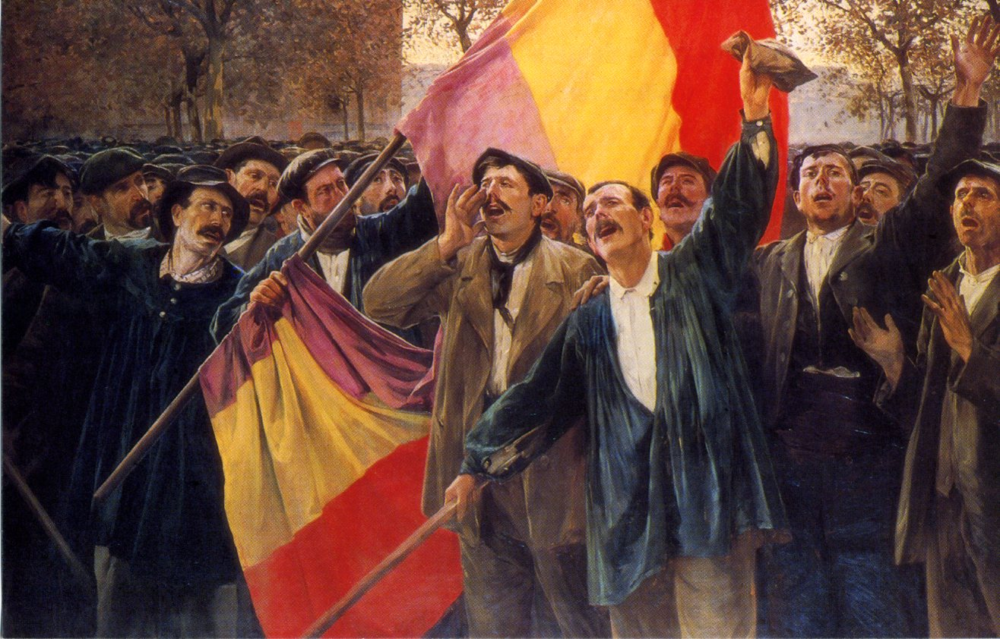

CONSTITUCIÓN DE 1931
1923-1977. Ausencia de Senado
La crisis del siglo XX Bajo la Constitución de 1876 el poder alternó entre los dos grandes partidos, el conservador y el liberal, lo que proporcionó una buena dosis de estabilidad al sistema. En cambio, los graves problemas políticos y sociales del fin de siglo, unidos a las manipulaciones y adulteraciones del sufragio, fueron privando de legitimidad al sistema. Desde comienzos del siglo XX se aceleró el proceso de crisis, que tuvo sus principales manifestaciones en 1909 con la semana trágica y en 1917 con una huelga general. En 1923 un nuevo golpe de estado determinó su fin y la instauración de la Dictadura del general Primo de Rivera, que duraría hasta 1930.
La Segunda República y la Guerra Civil (1931-1936) Unas elecciones locales en abril de 1931 actuaron como una especie de plebiscito contra la monarquía y el sistema político vigente. Declarada la República, se convocaron elecciones a Cortes constituyentes. Las mismas aprobaron una nueva Constitución, de corte muy distinto a las anteriores. Sus principios fueron los siguientes: en primer lugar, la forma republicana y el carácter democrático del Estado, expresado con la afirmación del origen popular de todos los poderes; en segundo lugar, laicismo, con una separación estricta del Estado respecto a la Iglesia; en tercer lugar, Estado integral, con descentralización política, en el sentido de que pueden constituirse en sus seno regiones autónomas, y, finalmente, reconocimiento de derechos fundamentales socioeconómicos. En el plano orgánico, se establecieron unas Cortes o Parlamento unicameral, un Presidente de la República y un Gobierno con un Presidente al frente, sometido a la confianza del Parlamento. Se celebraron tres elecciones democráticas, pero dentro de un clima de fuerte polarización. La Segunda República fue víctima de un golpe de Estado en 1936, pronto transformado en una guerra civil que duró casi tres años.
